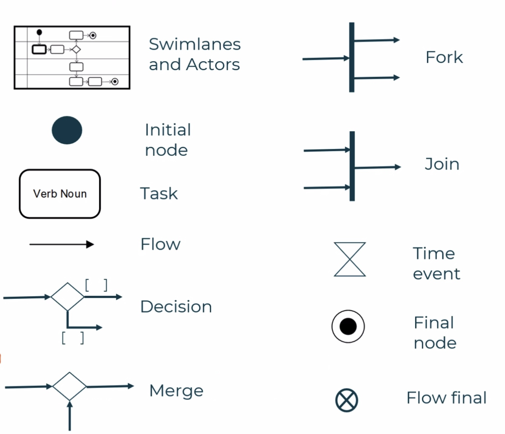
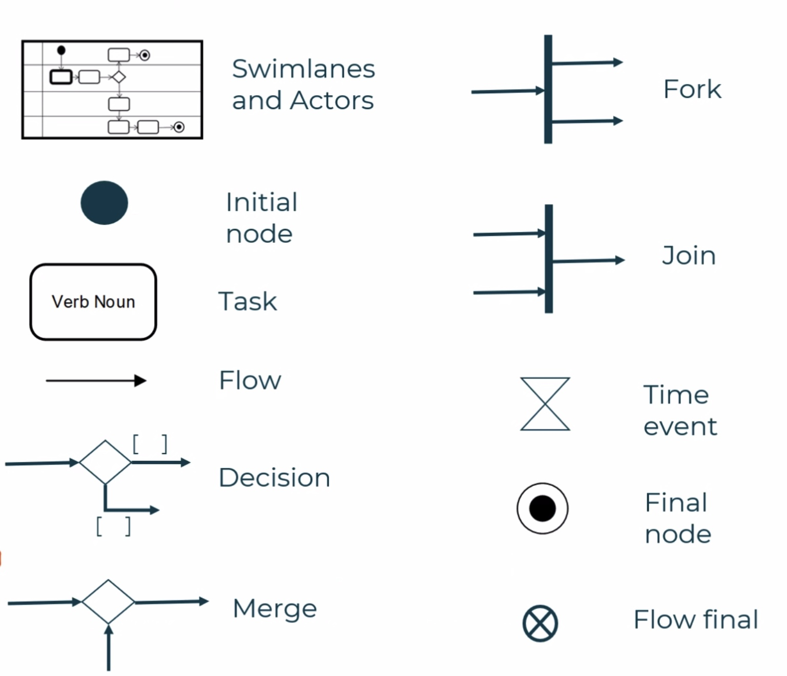

Business analysis is all about identifying business needs and determining the soltuions to business problems
There are many different processes that are used in business analysis, and on this webpage we will cover three


 
